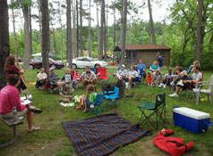

|
|
Harmony offers a lot more than just Sunday services and children's RE classes. Here are some of the many ways to experience Harmony:
- Family-friendly social gatherings: movie matinees,
potlucks, Trunk-or-Treat, Santa's Workshop, etc.
- Nonfiction book discussion groups
- Circle Suppers: rotating small group dinners
- Adult Religious Exploration: small group discussions
- Youth group outings
Harmony members, friends, and visitors are welcome to attend all events unless they are marked specifically as “Members Only”.
- Sunday, November 6 from 8:45-9:45 am - Meditation Group (Lakeview Room #7)
- Join us the first Sunday of each month in room #7 of Lakeview's Building (building attached to Harmony). Everyone is invited to attend and no sign up is required. Please contact us if you have any questions.
- Sunday, November 6 at 10:00 am - Sunday Service (Childcare Provided)
- "Quiet: The Power of Introverts" by Nichole Sajdak - This sermon explores the power of introverts and examines how that power requires recharging. Unfortunately as an introvert my recharge comes from something I repeatedly feel guilty about... taking time for myself.
- Sunday, November 6 at 11:30 am - Parenting Group (Childcare Provided)
- Harmony's parenting group meets on the first Sunday of each month from 11:30 am to 12:30 pm in Harmony’s upstairs classroom. Throughout this Fall, we will have an ongoing discussion of the book, "Tending the Flame: The Art of Unitarian Universalist Parenting". This is a drop-in group, so no sign up is necessary. All are welcome to attend.
- Wednesday, November 9 at 6:30 pm - Book Club at Sue's
- Book Club meets on the second Wednesday of each month at Sue's house,from 6:30-8:30. Please contact us for more information.
- Friday, November 11 at 8:00 pm - Men's Poker Night (Location TBD)
- The Men's Poker group typically meets on the second Friday of each month, and the location changes from month to month. Please contact us for more information.
- Saturday, November 12 at 9:30 am - Women's Coffee Club at Deerfield Starbucks
- Join us on the second Saturday of each month for our Women's Coffee Club. We meet at the Mason Montgomery Starbucks (8467 Mason Montgomery Rd., Mason, OH). No RSVP is required.
- Saturday, November 12 at 4:00 pm - Annual Members Meeting & Potluck (Members Only)
- Harmony members meet annually to vote in the new board members, review the past year, and discuss any important issues related to the operation of the church.
- Sunday, November 20 at 10:00 am - Sunday Service (Childcare Provided)
- "Religious Symbolism: Mary, Joseph and Jesus" by Dick Galloway - Joseph, the provider and protector; the Virgin Mary, the channel through whom the "Christ Consciousness" is born; and Jesus, the Christ child who would come to fully embody God’s Love. It’s a story hard for some of us to accept as an historical event. That side of the story is outside of us. But is the inner symbolic side pointing to a truth evolving within each of us? That’s may be the “Greatest Story Never Told."
- Sunday, November 20 from 11:30 am-1:00 pm - Practical Theology Group (Lakeview Room #7) (Childcare Provided)
- If you’d like to have informal yet intellectually satisfying conversations about theology, philosophy, spirituality, and morality, this discussion group is for you. Meetings are on the third Sunday of each month from 11:30 am to 1:00 pm in room #7 of Lakeview's Building. Our topic for November will be Post Election Processing: The result of the presidential election shocked both detractors and supporters of Donald Trump. We’ll devote our time to reflecting on the result, what it means, and how to best move forward. This is not a “Safe Space” meeting. All points of view are welcome. But it’s also not intended to be a whining session. Our main focus will be on the future and how we can make the best of it. This is a drop-in group, so no sign up is necessary. All are welcome to attend and childcare is provided.
- Sunday, November 20 at 12:00 pm - Oak & Sequoia Youth Group
- Join us for our final youth group meeting of the year. We’ll head over to Lazer Kraze after church for pizza and two rounds of laser tag. The cost is $15 per child. Please RSVP on Sign Up Genius if you can make it!
-
- Sunday, December 4 from 8:45-9:45 am - Meditation Group (Lakeview Room #7)
- Join us the first Sunday of each month in room #7 of Lakeview's Building (building attached to Harmony). Everyone is invited to attend and no sign up is required. Please contact us if you have any questions.
- Sunday, December 4 at 10:00 am - Sunday Service (Childcare Provided)
- "This is 40" by Rob Rogan - A midlife exploration at how the contradicting principles shape our small and large decisions.
- Sunday, December 4 at 11:30 am - Parenting Group (Childcare Provided)
- Harmony's parenting group meets on the first Sunday of each month from 11:30 am to 12:30 pm in Harmony’s upstairs classroom. Throughout this Fall, we will have an ongoing discussion of the book, "Tending the Flame: The Art of Unitarian Universalist Parenting". This is a drop-in group, so no sign up is necessary. All are welcome to attend.
- Friday, December 9 at 8:00 pm - Men's Poker Night (Location TBD)
- The Men's Poker group typically meets on the second Friday of each month, and the location changes from month to month. Please contact us for more information.
- Saturday, December 10 at 9:30 am - Women's Coffee Club at Deerfield Starbucks
- Join us on the second Saturday of each month for our Women's Coffee Club. We meet at the Mason Montgomery Starbucks (8467 Mason Montgomery Rd., Mason, OH). No RSVP is required.
- Saturday, December 10 from 3:00-4:30 pm - Santa's Workshop
- Harmony children will have an opportunity to shop in our “store” to buy and wrap gifts for their loved ones. (Price per gift is $5.) We'll also have cookies, hot cocoa, and a craft for kids and parents. Registration is required for this event. Please contact us for more information.
- Wednesday, December 14 at 6:30 pm - Book Club at Sue's
- Book Club meets on the second Wednesday of each month at Sue's house,from 6:30-8:30. Please contact us for more information.
- Sunday, December 18 at 10:00 am - Sunday Service (Childcare Provided)
- Join us for our annual Children's Christmas Play! The kids have been hard at work rehearsing for their performance of "A Charlie Brown Christmas", directed by Sue Sivertson and Caren Galloway.
- Sunday, December 18 from 11:30 am-1:00 pm - Practical Theology Group (Lakeview Room #7) (Childcare Provided)
- If you’d like to have informal yet intellectually satisfying conversations about theology, philosophy, spirituality, and morality, this discussion group is for you. Meetings are on the third Sunday of each month from 11:30 am to 1:00 pm in room #7 of Lakeview's Building. Our topic for December will be Islam and the Future of Tolerance, a conversation between philosopher and neuroscientist Sam Harris and reformed Islamic terrorist, Maajid Nawaz. We’ll watch a 45 minute discussion between the two men and then have 45 minutes to discuss amongst ourselves. Bring popcorn! This is a drop-in group, so no sign up is necessary. All are welcome to attend and childcare is provided.
- Saturday, December 24 at 7:00 pm - Christmas Eve Candlelight Carols Service
- Please join us at 7:00 p.m. on Christmas Eve for a special evening of carols and stories. Please note we will not open the nursery during this service; all kids are welcome to stay in the service and join in the singing!
|

|